宏观经济&投资入门
@lc4t
2025.03.14
投资有风险，入市须谨慎，仅个人分享，不构成投资建议
全部内容来自互联网信息整理、Claude
- 1. 引入
- 1.1 收益
- 1.2 基础知识
0.目录
- 3. 应用与投资入门
- 2. 从事件中读经济
1.1 收益
- 了解经济世界运行的基本规律
- 跑赢通胀的基本逻辑
- 防骗
- 解读国家政策
- 投资的一般方法
- 经济学的视角看识别
- 平衡投资心态
- 金钱观念
1.2 基础知识
1.2.1.1 生存
预测信息的能力是生命存活在这个星球上的根基
回忆上次分享内容：生命是如何在环境中生存的？
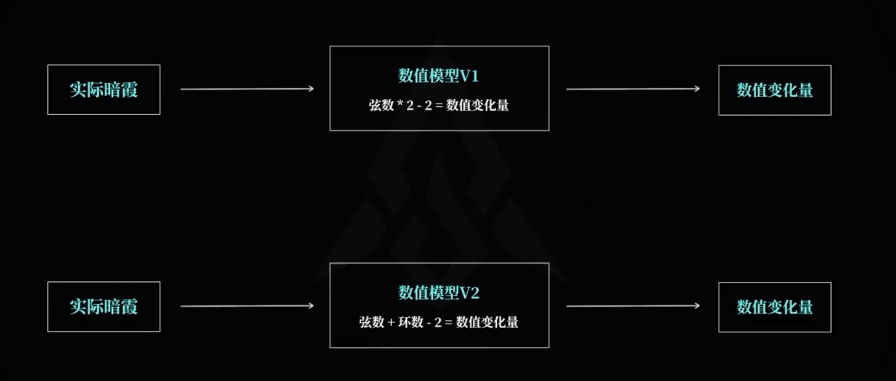
1.2.1.2 预测？
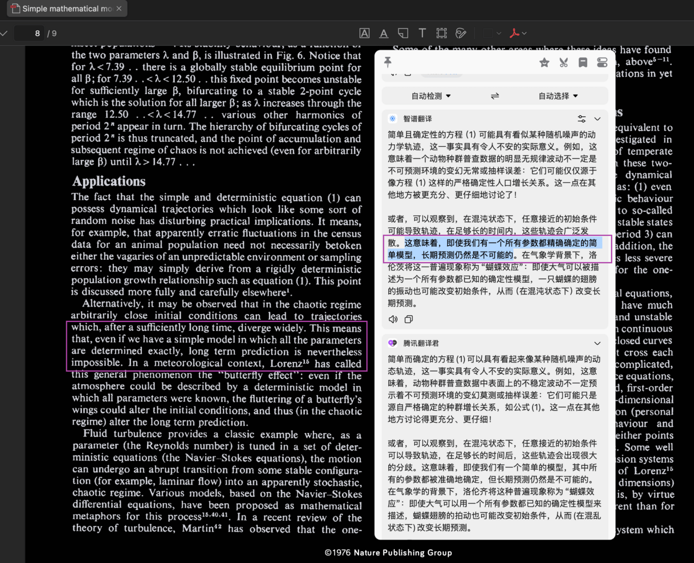
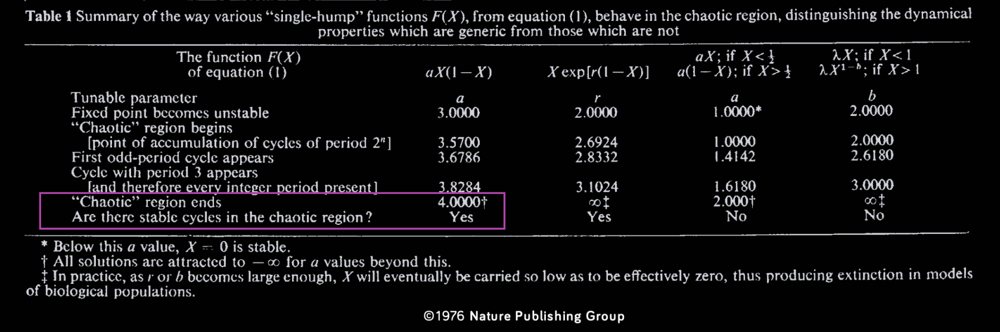
Simple mathematical models with very complicated dynamics 1976
DOI: 10.1038/261459a0Logistic映射
高中生物 选修II 《种群数量的变化》1.2.1.3 仍在发展的预测
Keynesian Chaos* 1985
DOI: 10.1016/S0164-0704(85)80012-4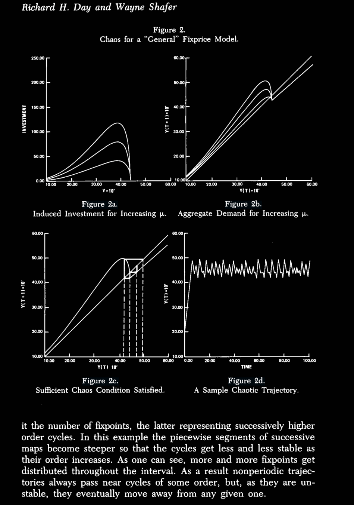
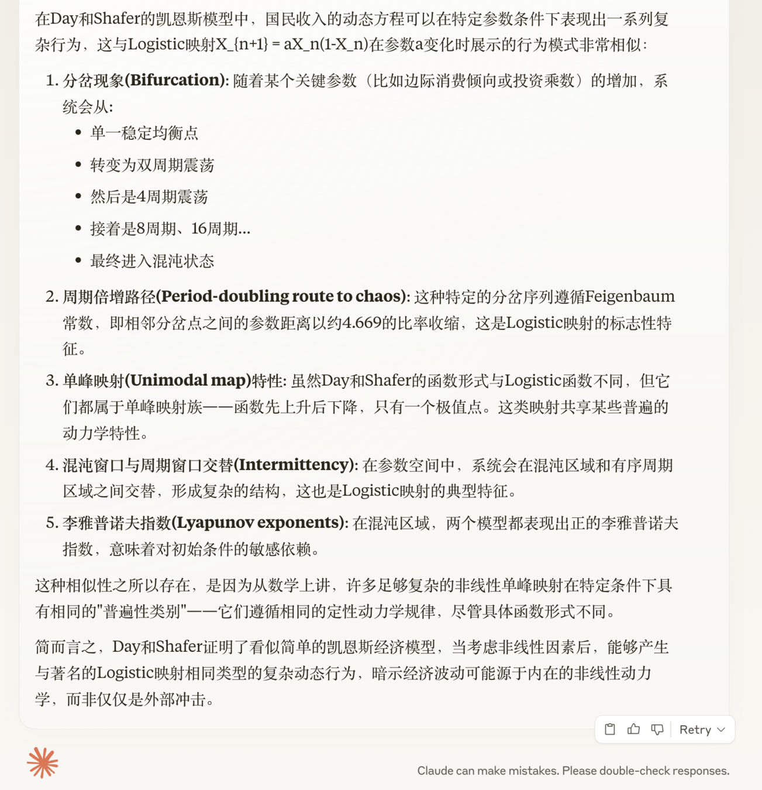
1.2.1.4 降级模型
https://wiki.mbalib.com/wiki/%E6%B7%B7%E6%B2%8C%E7%BB%8F%E6%B5%8E%E5%AD%A6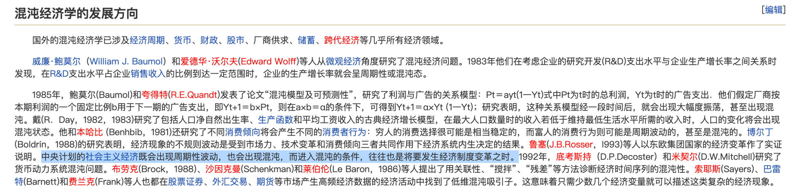
混沌系统不可能准确预测 →
拟合模型 →
经济学
Q: 与现实相比，牺牲了什么？置信率如何？如何理解黑天鹅？
1.2.2.1 经济学入门 - 认识学科
认识一门学科的基本方式：-
定义
-
研究对象
-
基本问题
-
基本假设
-
研究方法
-
置信率
1.2.2.2 经济学入门 - 定义
定义：非常抽象，经济学没有统一的定义，甚至彼此矛盾
认识一门学科的基本方式：-
定义
-
研究对象
-
基本问题
-
基本假设
-
研究方法
-
置信率
经济学从早期关注物质商品转向关注选择
英国经济学家莱昂内尔·罗宾斯(Lionel Robbins) 1932年
1.2.2.2 经济学入门 - 定义
定义：非常抽象，经济学没有统一的定义，甚至彼此矛盾
经济学是研究人类行为如何在目的与具有多种用途的稀缺资源之间做出关系的科学
认识一门学科的基本方式：-
定义
-
研究对象
-
基本问题
-
基本假设
-
研究方法
-
置信率
经济学从早期关注物质商品转向关注选择
英国经济学家莱昂内尔·罗宾斯(Lionel Robbins) 1932年
学科性质为科学：追求系统性知识和规律性认识采用观察、分析和理论构建等方法研究的主体，关注决策和行动，也不是自然现象
研究的是方法和机制，不仅要描述现象，还要解释过程
人类的需求欲望和偏好，其经济行为动机和导向，目的间可能存在竞争
资源具有替代性和选择性，同一资源可以服务于不同目的
指可用数量有限的各种资源，资源不足以满足所有需求
「目的」与「资源」之间存在权衡
通过决策分配资源，关系的建立是经济学本质
1.2.2.3 经济学入门 - 研究
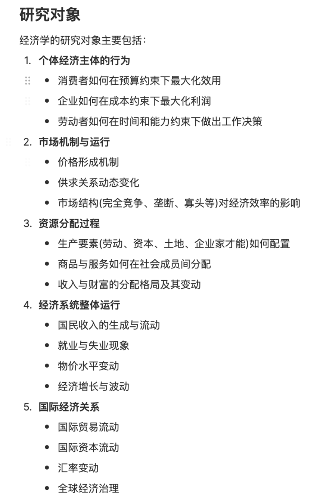
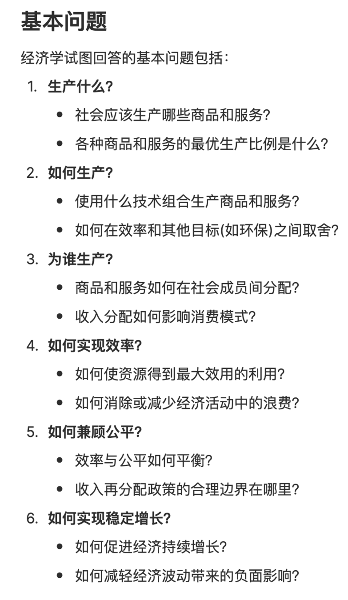
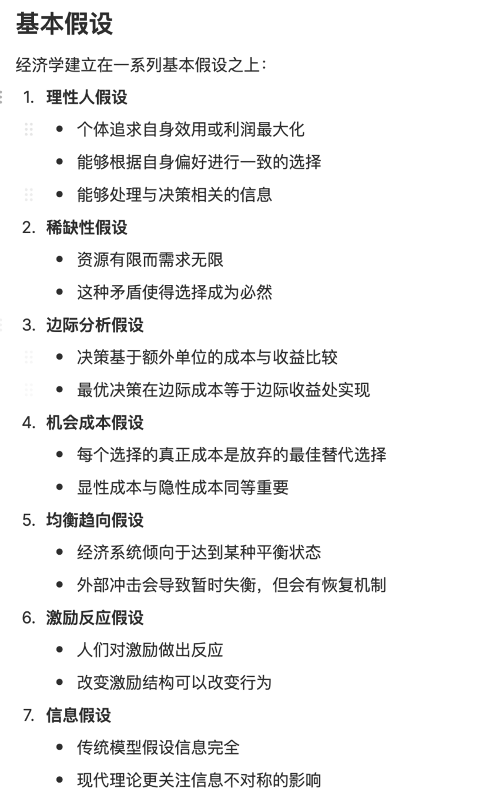
这部分有问题的话，问AI吧1.2.2.4 经济学入门 - 置信率
如果「数学」置信率是99%，「物理学」是90%，「心理学」是50%，
你估计「经济学」置信率是多少？
70% ~ 80% 左右
生命的更高级形式——文明，通过塑造「世界观」提供对「是什么」的预测，保障传承。
当前「世界观」的主流是「科学」。
通过「科学」认识「世界」，本质是「条件概率」，应遵循「贝叶斯公式」
因此，需要了解每一个学科的「置信率」。
1.2.3.1 宏观经济学
研究整体经济层面上的现象和经济系统的总体运行。
它关注国民经济的整体表现，而非单个市场或个体经济单位的行为
认识一门学科的基本方式：-
定义
-
研究对象
-
基本问题
-
基本假设
-
研究方法
-
置信率
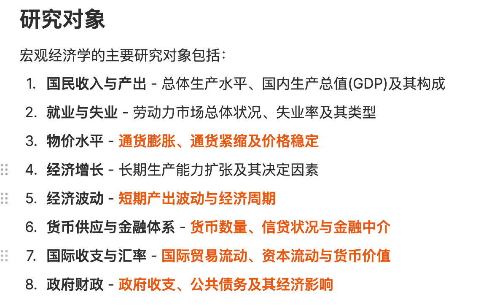
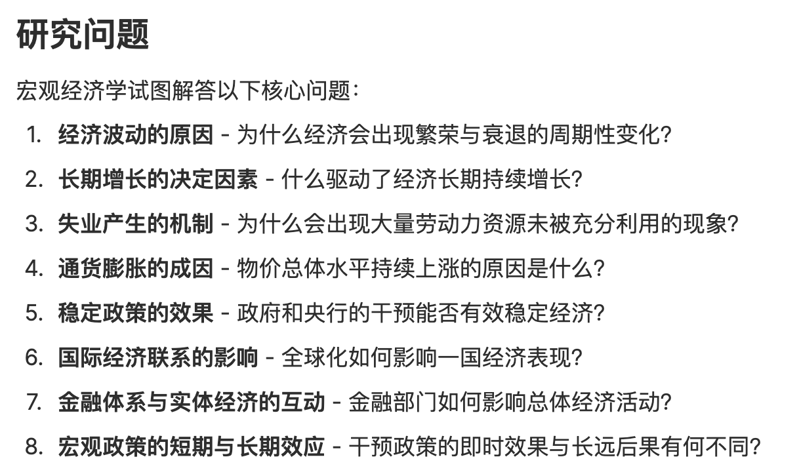
1.2.3.2 宏观经济学

课程：https://www.xuetangx.com/course/thu02011002194/1516229Create by Claude3.7太复杂了，不讲这个
1.2.3.3 GDP和储蓄
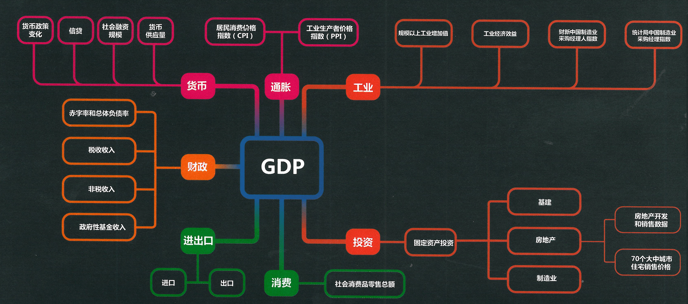
1.2.3.3 GDP和储蓄
统计差异/计算方法差异
非正规经济/非市场经济/新兴数字经济/服务业价值
折旧计算
一国生产的所有商品和服务(GDP)最终必须被某人购买和使用，要么是国内消费者、企业、政府，要么是国外购买者(净出口)。
一国的私人储蓄必须等于私人投资、政府赤字和经常账户盈余之和；如果一国投资大于储蓄，必然伴随着政府赤字和/或贸易逆差
延伸阅读1：2016营改增，天津滨海新区造假1/3GDP；营业税按照收入全额计税，本地自给自足，不关联GDP；2026新法，强调无偿转让视作销售、进项与生产有关
延伸阅读2：2024修正23GDP，房屋从成本(重置成本-折旧+土地)改市场租金法(年租金/不动产投资预期回报率)，后者往往大于前者，23年GDP修正了3.4万亿，+2.7%
1.2.3.4 货币数量方程
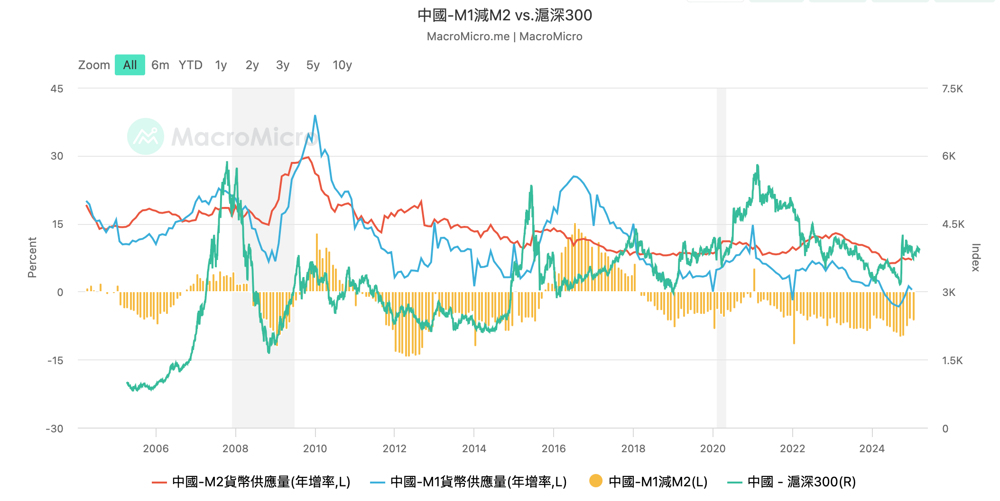

货币数量方程式源于费雪恒等式，表明一国货币供应乘以其流通速度必然等于名义经济产出；
长期中，货币供应增长主要影响物价水平。如果V相对稳定，且Y由实际因素决定，那么M的变化将主要影响P
1.2.3.5 利率与投资关系
当实际利率下降时，投资通常会增加，反之亦然。其经济逻辑是： 利率代表资金成本；利率下降使更多投资项目变得有利可图；利率影响资本使用成本，从而影响企业投资决策 这个关系是IS曲线(投资-储蓄平衡)的基础，也是货币政策影响实体经济的主要渠道之一。
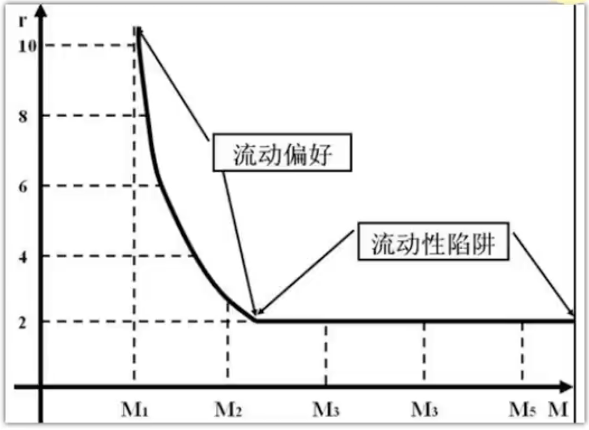
但是，当利率下降到一定程度后
1.2.3.6 信用货币
货币金属论(取代以物易物)
高中政治 《必修一》 萨缪尔森曾被作为货币的商品：烟草、皮革、橄榄油、酒、奴隶、妻子、巨石、地标、烟蒂，最终被纸币取代，在纸币时代出现了银行货币货币信用轮(取代以物易物)
经济学《货币论》 凯恩斯债务或信贷是货币的前身，最初的货币就是远期合约原始社会交换行为是一种公共活动，其目的是为了增强某些人的地位，及其他的一些自我推进的事物 Karl Paul Polanyi《Trade and Markets in the Early Empires》
长辈发红包体现的是权威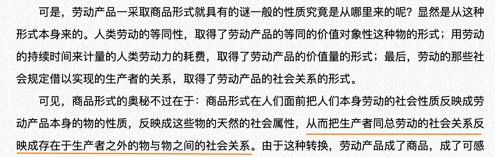
马克思 《资本论·第一章·商品》 https://www.marxists.org/chinese/marx/capital/01.htm
结婚买房、发放工资本节来源: 《靳卫萍：2025上半年国内外政治经济解读》1.2.3.7 加密货币
货币职能：价值尺度、流通手段、贮藏手段、支付手段货币资产条件：便于携带、流通；本身具有价值（黄金或担保）【加密货币】本节来源: 《靳卫萍：2025上半年国内外政治经济解读》
去中心化：不依赖中央机构或政府，交易不受监管和干预匿名性：交易不需要披露个人身份信息，提高用户隐私和安全性交易速度快：通常只需要几秒到几分钟的时间交易成本低：没有中间商或第三方机构参与，因此费用较低技术开源：加密货币使用开放共享的技术，如区块链2010.05.22 1万枚比特币购买披萨成功，正式成为货币流通手段：商品交换的媒介，一手交钱一手交货
支付手段：用于偿还债务，先交货，后交钱
贮藏手段：流通领域之外的独立的价值形式
价值尺度：衡量其他商品的能力
勒索与数字敲诈工作组(RDETF)追回DarkSide勒索的63.7个比特币
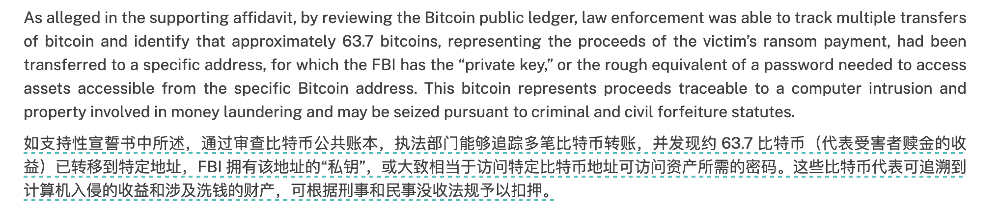
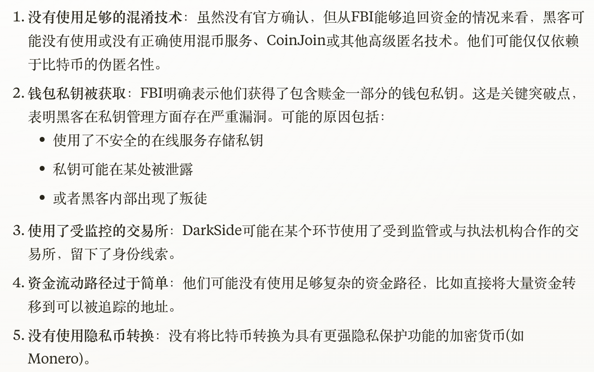
1.2.3.8 菲利普斯曲线

当实际失业率低于自然失业率时，通胀压力会增加
当人们预期通胀率上升时，实际通胀率也会上升
供给冲击（如油价上涨）可能导致通胀率暂时偏离曲线预测值
这个关系对央行制定货币政策至关重要，因为它表明了潜在的政策权衡：通过扩张性政策降低失业率可能导致通胀上升，而通过紧缩性政策降低通胀可能导致失业率上升。
一般认为，中国城镇自然失业率：大约在4%-5%之间，所以...
实际利率 = 名义利率 - 通胀率
1.2.3.9 AD-AS模型
总需求曲线(AD)：呈现向右下方倾斜的形状，表示价格水平(P)与总产出(Y/实际GDP)之间的负相关关系。当价格水平下降时，总需求增加，反之亦然。
短期总供给曲线(SRAS)：向右上方倾斜，表示价格水平与总产出之间的正相关关系。在短期内，价格上升会刺激企业增加产量。
长期总供给曲线(LRAS)：垂直于横轴，表示长期内总产出由经济的潜在产能决定，与价格水平无关。
E₀：初始均衡点，AD与SRAS曲线的交点，决定了均衡价格水平P₀和均衡产出Y₀
E₁：总需求增加后(AD移动到AD')的短期新均衡，价格水平从P₀上升到P₁，产出增加到Y₁
E₂：长期均衡点，随着时间推移，经济会回到潜在产出水平
当AD曲线向右移动时(如扩张性财政或货币政策)，短期内会增加产出和就业，但也会导致价格上升
长期来看，经济会回到潜在产出水平，但价格水平会上升
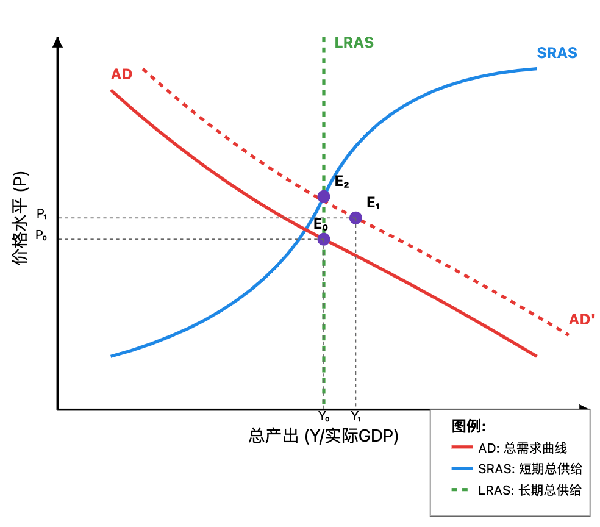
1.2.3.10 总量生产模型
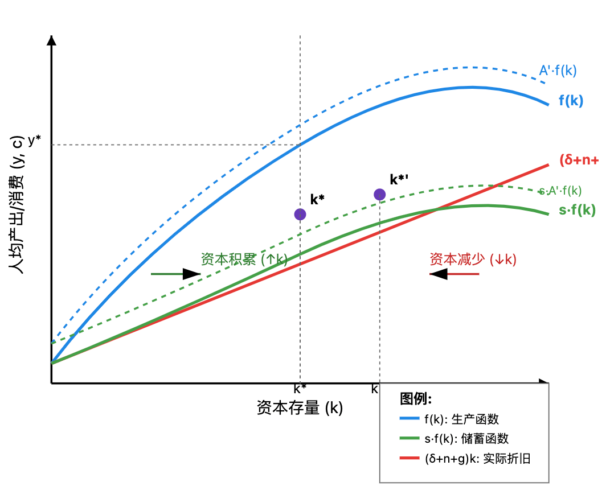
生产函数 f(k)：表示人均资本存量(k)与人均产出(y)之间的关系。呈现收益递减特性，即随着资本的增加，额外资本对产出的贡献逐渐减少。
储蓄函数 s·f(k)：表示经济体中的储蓄水平，是产出的一个固定比例(s)。这部分储蓄用于投资新的资本。
实际折旧线 (δ+n+g)k：
δ：资本折旧率
n：人口增长率
g：技术进步率 这条线表示为维持当前人均资本水平所需的投资。
*稳态均衡点(k)**：当储蓄函数与实际折旧线相交时，经济达到长期稳态均衡。在这一点上，新增投资恰好等于需要替换的资本量，人均资本存量保持不变。
收敛性：不同起点的经济体最终将收敛到各自的稳态均衡点。如果一个经济体的资本水平低于稳态值(k < k*)，资本会积累；如果高于稳态值(k > k*)，资本会减少。
储蓄率影响：提高储蓄率(s)可以提高稳态资本水平和产出水平，但不能持续提高长期增长率。
技术进步的作用：可持续的长期经济增长主要依赖于技术进步(A的增长)，图中表现为生产函数的整体上移。
黄金法则：存在一个最优的储蓄率，使得稳态下的消费最大化。
长期经济增长主要依赖于技术进步和创新，而非仅仅依靠资本积累。
发展中国家的快速增长可以解释为向各自稳态的收敛过程。
提高人力资本质量、改善制度环境、促进技术创新是实现可持续经济增长的关键。
1.2.4.1 经济运行的基本逻辑
必看：《经济机器是如何运行的》https://www.youtube.com/watch?v=rFV7wdEX-Mo
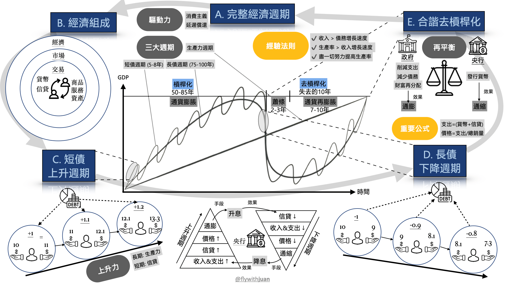
1.2.4.2 蒙代尔-弗莱明模型
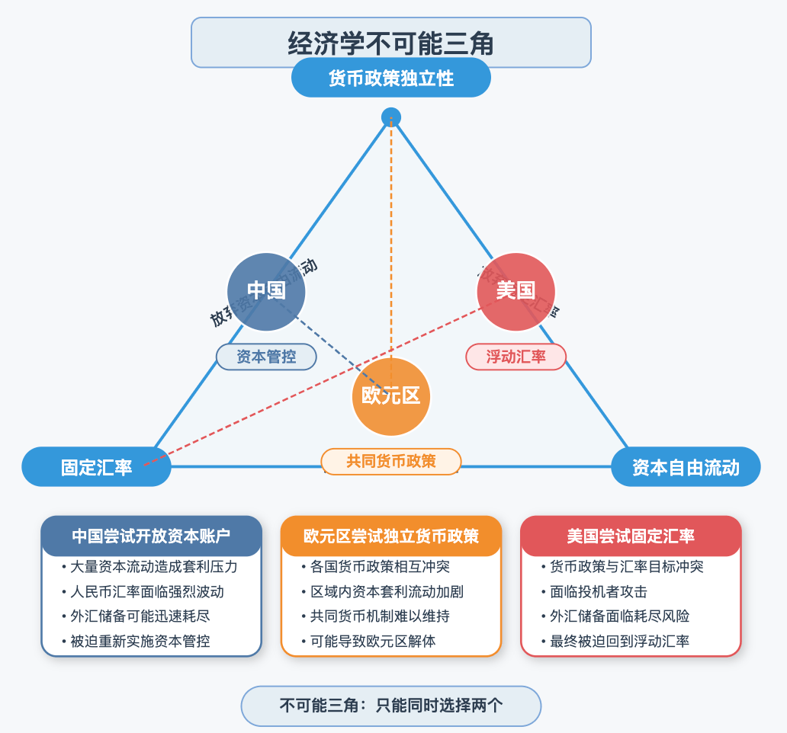
更多内容：无风险套利(Arbitrage)
1.2.4.3 常见经济指标
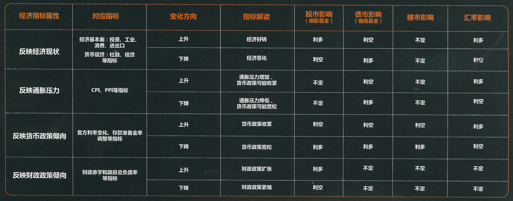
2.1 从事件中读经济
1. 拜登、嘉实基金、924政策大礼包
2. 蚂蚁上市与马云风波
3. 俄乌战争、欧洲、朝鲜、中美关系
4. 泰国金融战争、香港金融保卫战
5. 日本失落的30年
6. 房地产城投债转向新质生产力
时间有限，这里选了2个，其他的自行结合宏观经济理解吧
2.2 拜登、嘉实基金、924政策大礼包

ep1070792、ep1321731
中庸之道
2.3 蚂蚁上市、马云风波
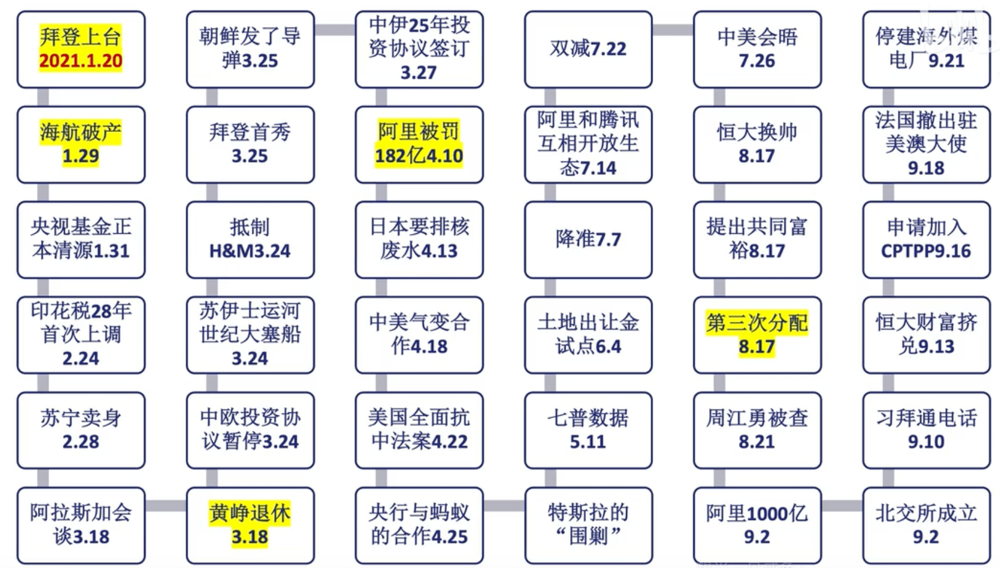
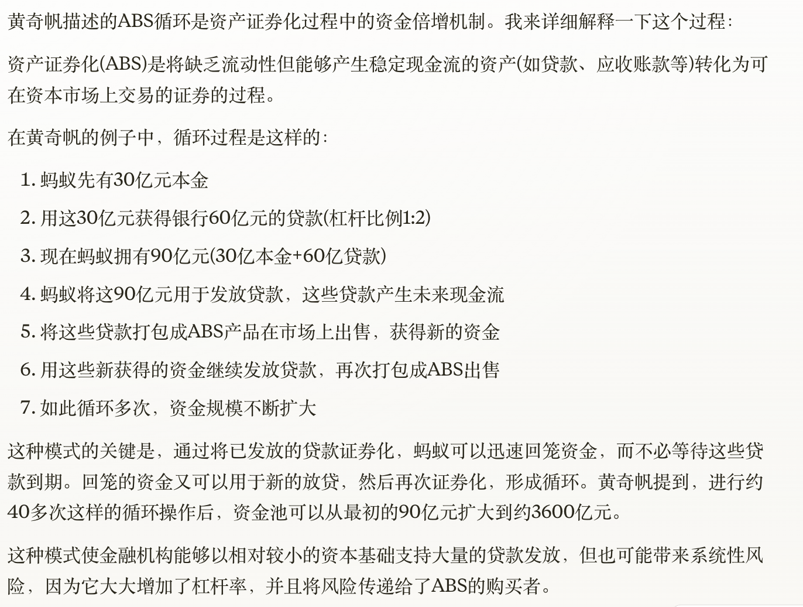
新零售（线上线下物流结合）、世界级贸易平台eWTP（WTO支持）、金融：用户、牌照、数据；、菜鸟、大数据、传媒、湖畔大学
ep1485527
2.3 蚂蚁上市、马云风波
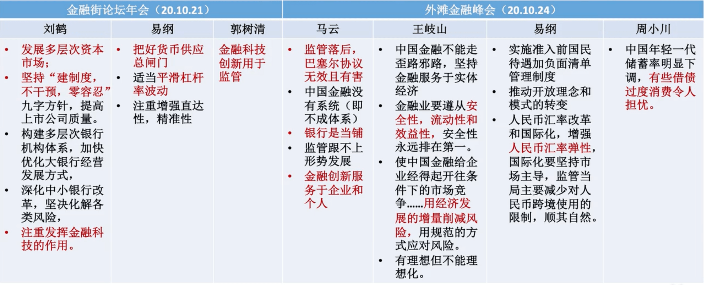
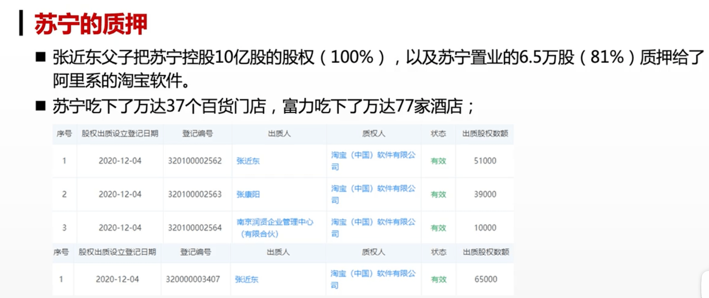
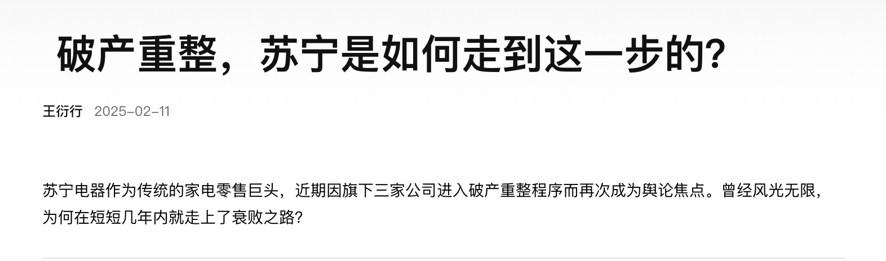
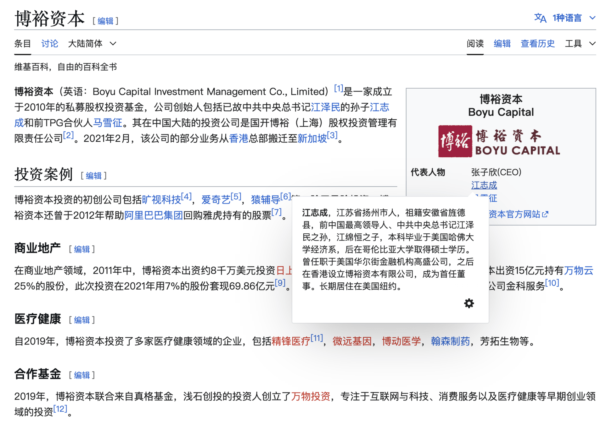
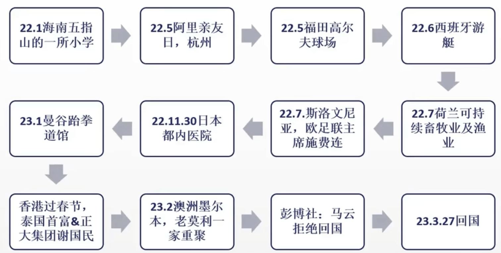
ep1485527
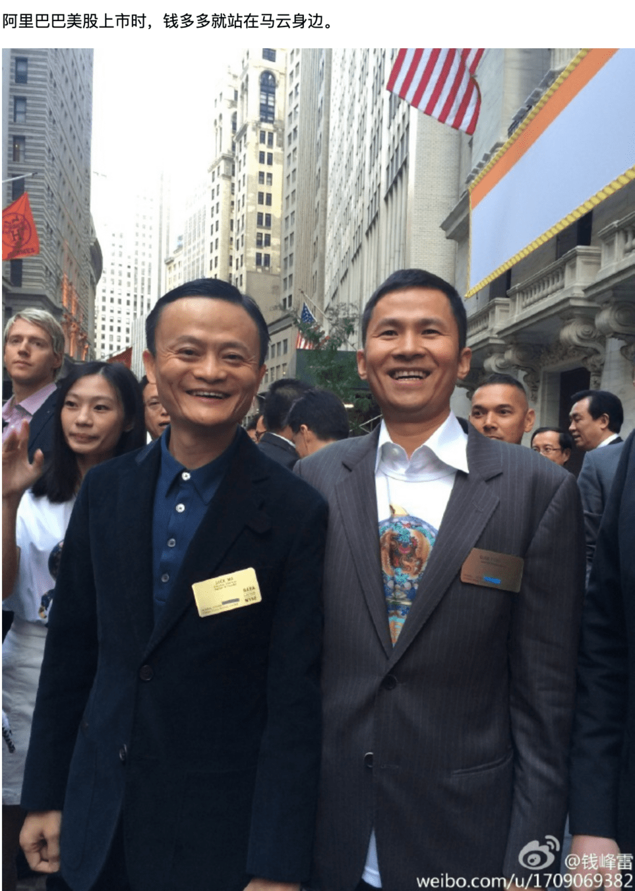
20.11.14，香港砍人事件
钱峰雷，金融融通中介
3.1 投资之道
为什么老是亏钱？
1. 不懂瞎买
2. 以为自己懂，投个股
3. 上杠杆
4. 做高风险投资
投资买房高位接盘，不懂居民借贷
2020年阿里股价319，但马云家族信托21.11.21以87.07出售了1000w股
马化腾05.7减持后1年涨了300%，08.10减持后涨了285%，20.1月减持2月就疯涨到418
什么是我不能失去的？
期货外汇甚至是二次元的谷子，配资然后强行平仓
3.2 投资之道
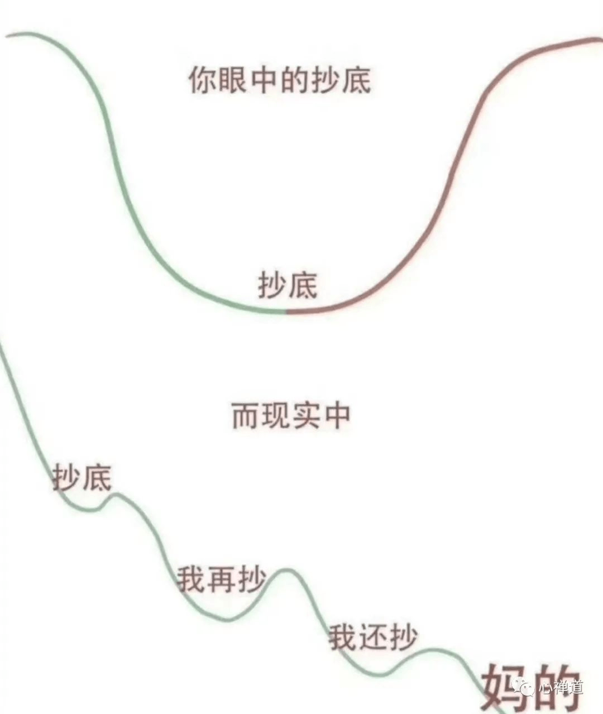
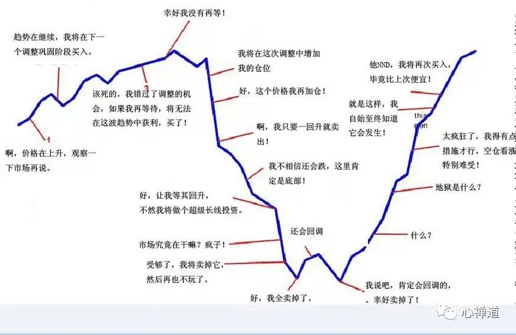
3.3 投资之道：先理财
从赚钱开始应该学习理财，积累经验和信息
理财从知道自己有多少钱开始
资产负债表
现金流量表
收入支出表
学习收益、风险
什么是股票？基金？债券？
风险从哪里来？
资产价格与什么有关？
...
思考题：房贷利率2.5%值得投资吗？
3.4 投资之道：先理财
理财的核心价值：平衡财富和生活的关系，找到确定性
为什么有人会被骗？
1. 希望有一个救世主、大神，希望有一个确定性的答案，不想为自己的决策负责
2. 不学习、不思考，不知道投资为什么赚钱、经济运转规律、理财方式、风险偏好
如果希望一蹴而就，亏点还好，但最终是赌博或被骗
3. 忽视基本规律：「高收益、低风险、高流动性」不可能三角
3.5 投资之道：理解投资
其实投资就两件事：择股 x 择时
但是都很难
| 投资流派 | 代表人物 | 主要指导思想 | 择股思路 | 择时思路 | 特点 |
|---|---|---|---|---|---|
| 价值投资 | 本杰明·格雷厄姆、沃伦·巴菲特、查理·芒格 | 寻找被低估的股票，注重安全边际 | 分析公司基本面，寻找市场价格低于内在价值的公司 | 分析公司基本面，寻找市场价格低于内在价值的公司 | 不强调市场择时，长期持有 | 重视基本面分析，强调安全边际，长期投资，防御性较强 |
| 成长投资 | 菲利普·费舍尔、彼得·林奇 | 投资于具有高增长潜力的公司 | 关注收入增长率、利润增长前景和竞争优势 | 较少关注短期市场波动，注重长期成长趋势 | 愿意支付较高估值，重视创新能力，关注行业前景 |
| 量化投资 | 詹姆斯·西蒙斯、大卫·肖 | 利用数学模型和算法进行投资决策 | 通过模型筛选符合特定条件的股票 | 算法决定买卖时机 | 系统性强，排除情绪干扰，可实现多元化策略 |
| 技术分析 | 约翰·墨菲、拉尔夫·艾略特 | 通过历史价格和交易量预测未来走势 | 较少关注基本面，主要看图形形态和指标 | 根据技术指标、趋势线和支撑阻力位决定 | 适用于各种时间周期，强调市场心理，交易频率较高 |
| 消息面投资 | - | 基于市场新闻和事件做出投资决策 | 关注可能影响股价的公司公告和新闻 | 根据消息发布时机和市场反应决定 | 反应迅速，交易频率高，重视信息收集与分析 |
| 资产配置 | 哈里·马科维茨、雷·达里奥 | 通过多元化投资分散风险 | 不专注于个股选择，而是关注资产类别 | 根据经济周期和风险偏好调整不同资产比例 | 强调风险管理，定期再平衡，综合考虑风险与回报 |
| 指数投资 | 约翰·博格尔 | 市场难以长期战胜，应投资于整体市场 | 不选择个股，直接投资指数基金 | 不择时，长期持有 | 低成本，被动管理，广泛多元化，适合普通投资者 |
| 周期投资 | 霍华德·马克斯、山姆·兹尔 | 根据经济和市场周期进行投资 | 选择符合当前经济周期阶段的行业和公司 | 基于经济周期阶段进行择时 | 关注宏观经济指标，行业轮动，强调市场周期性 |
| 逆向投资 | 大卫·德雷曼、约翰·邓普顿 | 与市场共识相反的投资策略 | 寻找被市场过度悲观看待的股票 | 在市场恐慌时买入，贪婪时卖出 | 需要强大的心理素质，抗压能力强，等待周期较长 |
| 事件驱动投资 | 乔治·索罗斯 | 基于特定事件对市场的影响进行投资 | 分析公司并购、重组等特殊事件 | 根据事件发生前后的市场反应决定 | 专注于特定事件，通常持有期较短，需要专业分析能力 |
3.6 投资之道：理解投资
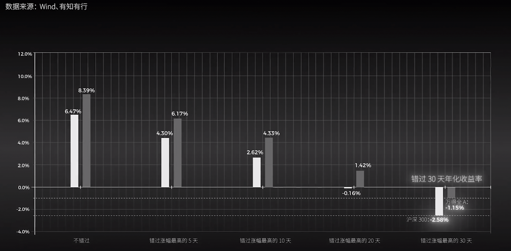
择时的困难性
3.7 投资之道：我的投资理念 资产配置2.0
几点注意事项
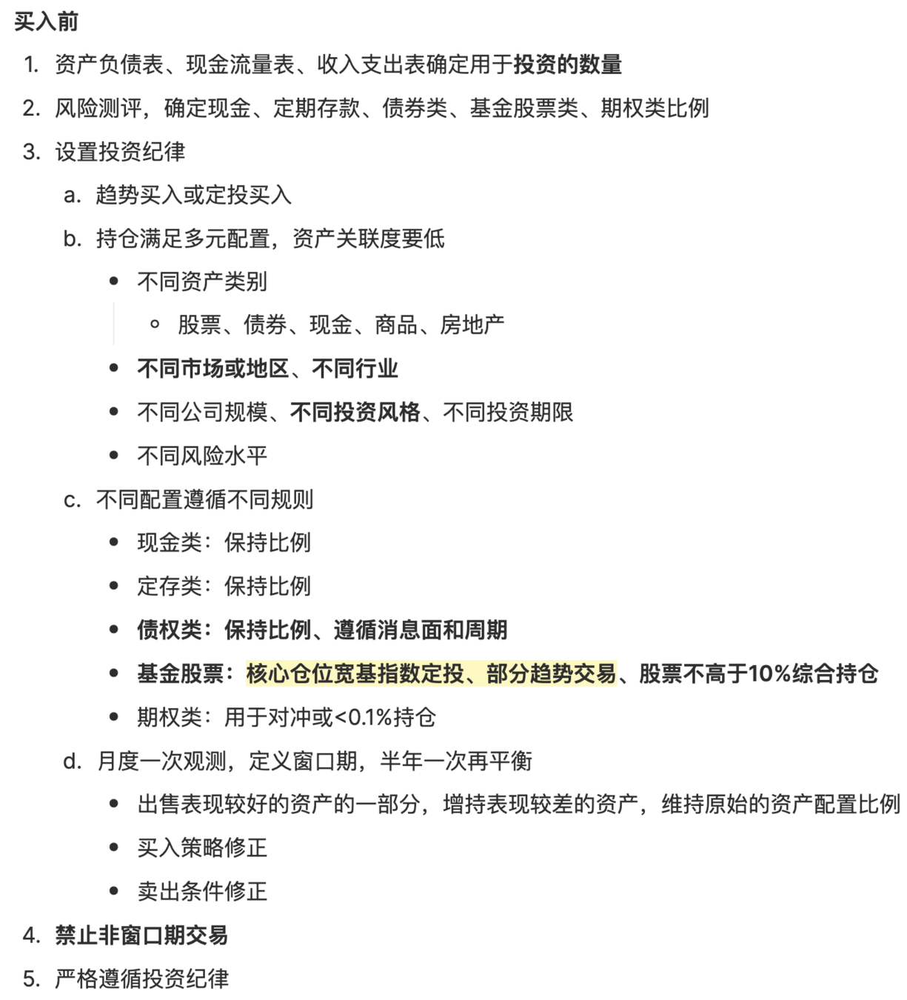
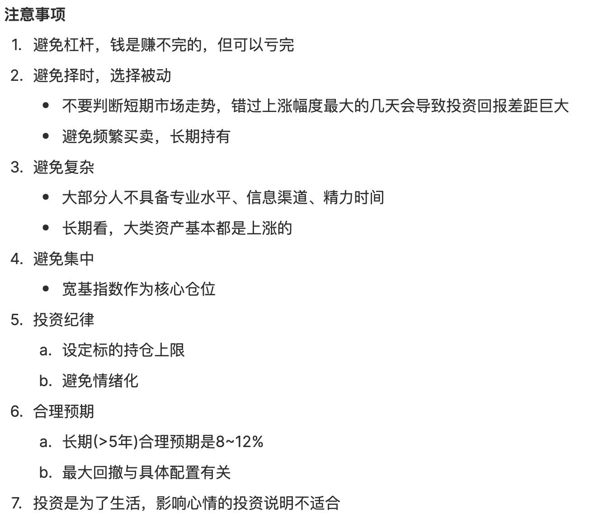
3.8 投资之道：我的投资理念 资产配置2.0
结合量化、趋势写的开源小工具，全部代码 AI 完成：trading.sakanano.moe
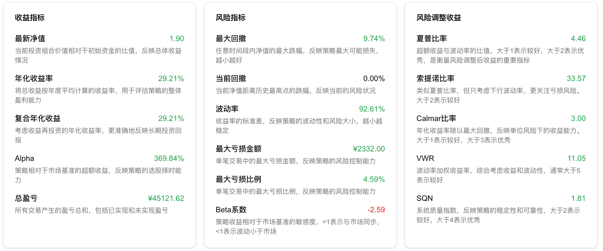
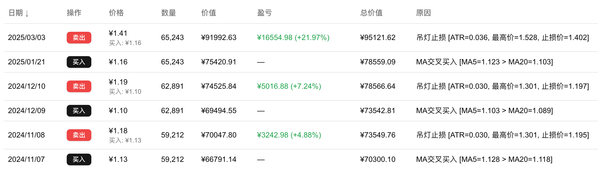
借鉴：
策引
牛指早发现
TradingView
3.9 投资之道：我的投资理念 资产配置2.0
v2.0 基本认知
不要买不懂的资产，但买了就要认
优秀的策略是在牛市>50%分位但熊市>10%分位
基于个人情况建立策略，严格遵循投资纪律
盈利取决于本金而不是标的，不提资金量的收益率是没有意义的
暴富可能是运气，但更有可能是诅咒
赚认知内的钱，指的是认知足够对抗波动
不断学习，永远谦虚
真正的稳赚不赔：
去炒股群里要红包
4 参考和推荐
素材来源和推荐
投资是怎样赚钱的 投资入门视频
靳卫萍老师 政治经济事件解读
经济机器是怎样运行的 提供最科普的经济规律讲解
投资第一课 提供投资知识入门课程
起朱楼宴宾客 提供投资入门播客
https://www.bilibili.com/festival/jzj2023?bvid=BV1e8411B7w7
https://space.bilibili.com/504018708
https://space.bilibili.com/266555345
https://www.youtube.com/watch?v=rFV7wdEX-Mo
https://youzhiyouxing.cn/curriculum/lessons
https://www.xiaoyuzhoufm.com/podcast/61dd99a47b29652ff572257b
常用APP和平台
有知有行：资产配置入门、收益观测
iCost/Beancount：流水记账工具
Percento：投资持仓可视化
Notion/Anytype：投资复盘
Wind：大盘追踪
TradingView：回测、海外资产追踪
财新 消息面和解读
https://www.caixin.com/
https://docs.qq.com/sheet/DR09SbW1YVURGQ2dK
5 QA
关于基金定投
本质是平均成本，适用条件是长期上涨时长，波动越大收益越好
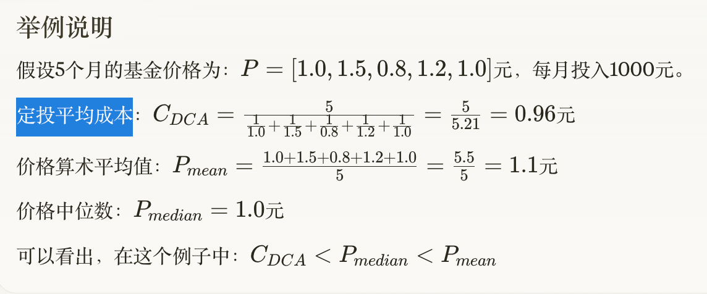
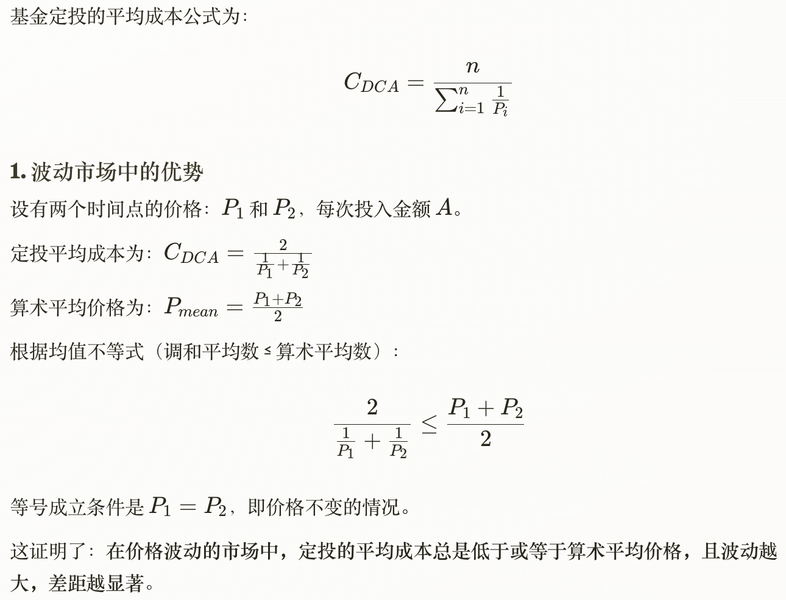
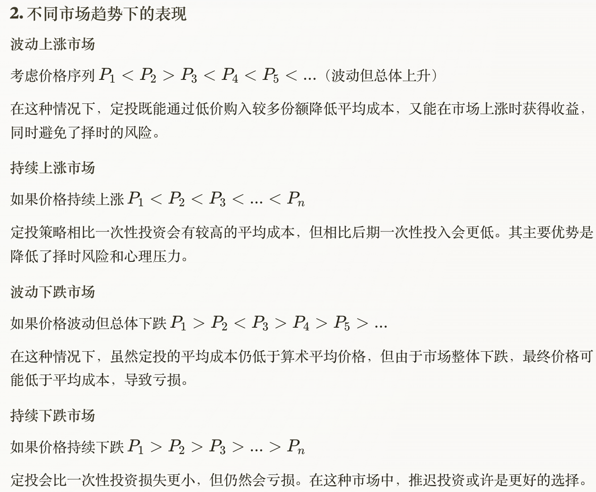
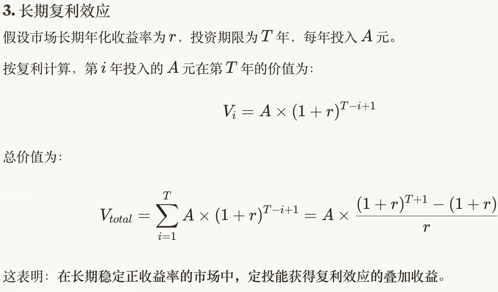
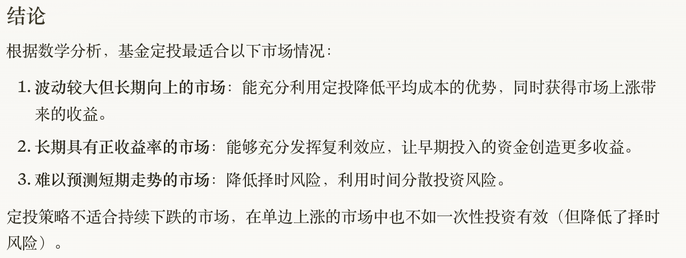
5 QA
关于黄金
同时具备商品属性、资产属性、货币属性
1. 商品属性：大宗商品，类似原油，价格受到成本、供需的影响
供给端：全球黄金矿业的综合开采成本1200-1400$/盎司
需求端：工业、首饰、投资、央行配置
2. 资产属性：黄金是避险资产，不生息资产
（加息）主权货币利率高 → 对应债券收益率高 → 资金从低利率流向利率 → 黄金↓
3. 货币属性：和其他国家主权货币竞争
当世界局势不稳定时，资金对国家主权货币不信任，买入黄金 —— 大国博弈，黄金受益
信任 vs 风险
5 QA
关于黄金
同时具备商品属性、资产属性、货币属性
1. 商品属性：大宗商品，类似原油，价格受到成本、供需的影响
供给端：全球黄金矿业的综合开采成本1200-1400$/盎司
需求端：工业、首饰、投资、央行配置
2. 资产属性：黄金是避险资产，不生息资产
（加息）主权货币利率高 → 对应债券收益率高 → 资金从低利率流向利率 → 黄金↓
3. 货币属性：和其他国家主权货币竞争
当世界局势不稳定时，资金对国家主权货币不信任，买入黄金 —— 大国博弈，黄金受益
信任 vs 风险